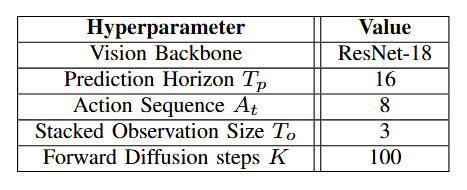
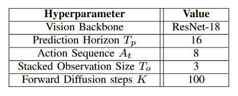

Abstract
Opening heavy, self-closing doors—especially those that require pulling—remains a long-standing challenge in robotics. Humans naturally employ both arms in a dexterous manner—rotating the handle, widening the gap, holding the door, switching arms when needed, and moving through while maintaining clearance. To replicate such behaviors, a robot must perform a long sequence of motions spanning multiple stages and interactions with different parts of the door. Traditional approaches rely on state machines that transition between manually defined stages (e.g., pulling after the knob is rotated, passing after the gap is sufficiently wide). While intuitive, these methods lack robustness, as hand-crafted trajectories fail to generalize to the diversity of real-world conditions without extensive engineering effort. Recent advances in imitation learning offer a scalable alternative, yet no existing visual-action model has demonstrated simultaneous coordination of a nonholonomic base and dual arms for the complete door opening and passing task. In this paper, we tackle this complex, highly constrained problem using a diffusion-based visuomotor control policy. Our results demonstrate that a single end-to-end policy can be learned to execute long-horizon tasks requiring tight coordination between manipulation and locomotion. The resulting policy not only achieves a high success rate in opening and traversing damped pull doors but also demonstrates strong robustness to external disturbances—capabilities that are difficult to realize with traditional methods.


 
